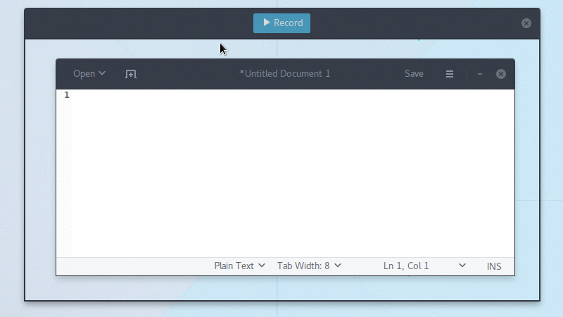

Peek - an animated GIF recorder
A Simple screen recorder with an easy to use interface
Features
What can you do with Peek?
Install Peek
Peek is available for a variety of Distributions
-
Flatpak
Peek can be installed on all distributions supporting Flatpak. To install, either download peek-stable.flatpakref and open it with GNOME Software or install via command line:
flatpak install --user https://raw.githubusercontent.com/phw/peek/master/data/flatpak/peek-stable.flatpakrefFor full functionality you should also install xdg-desktop-portal-gtk. Once installed you can run Peek via its application icon in your desktop environment or from command line:
flatpak run com.uploadedlobster.peekTo update to the latest version run:
flatpak update --user com.uploadedlobster.peekTo test the latest development version you can install peek-master.flatpakref.
-
Ubuntu
You can install the latest versions of Peek from the Ubuntu PPA.
sudo add-apt-repository ppa:peek-developers/stable
sudo apt update
sudo apt install peek -
Arch Linux
For Arch Linux peek is available in the AUR. You can also use peek-git to install the latest development version.
yaourt -S peekyaourt -S peek-git -
Debian
There are no official Debian packages, yet, but you can easily create your own .deb package for Peek. First install the build dependencies:
sudo apt install cmake valac libgtk-3-dev libkeybinder-3.0-dev libxml2-utils gettextThen build Peek and package it:
git clone git@github.com:phw/peek.git
mkdir peek/build
cd peek/build
cmake -DCMAKE_INSTALL_PREFIX=/usr -DGSETTINGS_COMPILE=OFF ..
make packageThis will create the package peek-1.0.0-Linux.deb. You can install it with dpkg:
sudo dpkg -i peek-1.0.0-Linux.debAlternatively you might want to try the Ubuntu packages from the PPA, they probably work just fine on Debian, too.
-
Fedora
Fedora 25 users can use this repository:
sudo dnf config-manager --add-repo http://download.opensuse.org/repositories/home:/Bajoja/Fedora_25/home:Bajoja.repo
sudo dnf install peek -yTo install the required ffmpeg package you can use the RPM Fusion free repository, see the setup instructions for RPM fusion. Once the repository is enabled install ffmpeg with:
sudo dnf install ffmpeg -
From Source
You can build and install Peek using CMake:
git clone git@github.com:phw/peek.git
mkdir peek/build
cd peek/build
cmake -DCMAKE_INSTALL_PREFIX=/usr ..
make
# Run directly from source
./peek
# Install system wide
sudo make installYou can uninstall Peek again by running
sudo make uninstallfrom within the build directory. -
Official distribution packages
Peek is available in official package repositories for the following distributions:
- Gento
- OpenSUSE
- Parabola
Get Involved
If you want to help make Peek better the easiest thing you can do is to report issues and feature requests. Or you can help in development and translation.
Development
You are welcome to contribute code and provide pull requests for Peek. The easiest way to start is looking at the open issues tagged with up-for-grabs. Those are open issues which are not too difficult to solve and can be started without too much knowledge about the code.
Another good starting point are issues tagged with help-wanted. Those issues are probably harder to solve, but for some reason I cannot work on it for now and would love to see somebody jump in.
In any case, just leave a note on the issue itself that you are working on it, to avoid multiple people working on the same issue.
Translation
You can help translate Peek into your language. Peek is using Weblate for translation management.
Go to the Peek localization project to start translating. If the language you want to translate into is not already available, you can add it here.
If you want to be credited for your translation, please add your name to the translator-credits for your language. The translator credits are shown in Peek's About dialog.
Frequently Asked Questions
-
How can I capture mouse clicks and/or key strokes?
Peek does not support this natively. But you could install an external tool like key-mon which is usually included in most distributions, so you can easily install with your package manager. Then start key-mon with key-mon --visible_click.
The --visible_click option is for drawing small circles around mouse clicks. -
The recording area is all black, how can I record anything?
Ut enim ad minim veniam, quis nostrud exercitation ullamco laboris nisi ut aliquip ex ea commodo consequat. Duis aute irure dolor reprehenderit.
-
My recorded GIFs flicker, what is wrong?
Duis aute irure dolor in reprehenderit in voluptate velit esse cillum dolore eu fugiat nulla pariatur. Excepteur sint occaecat cupidatat proident.